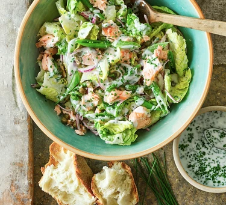

Hot-Smoked Salmon Salad
A light and flavorful salad featuring hot-smoked salmon, fresh greens, and a citrusy dressing. This vibrant salad offers a delightful combination of smoky salmon, crunchy vegetables, and a tangy dressing, making it a perfect choice for a healthy and delicious meal.